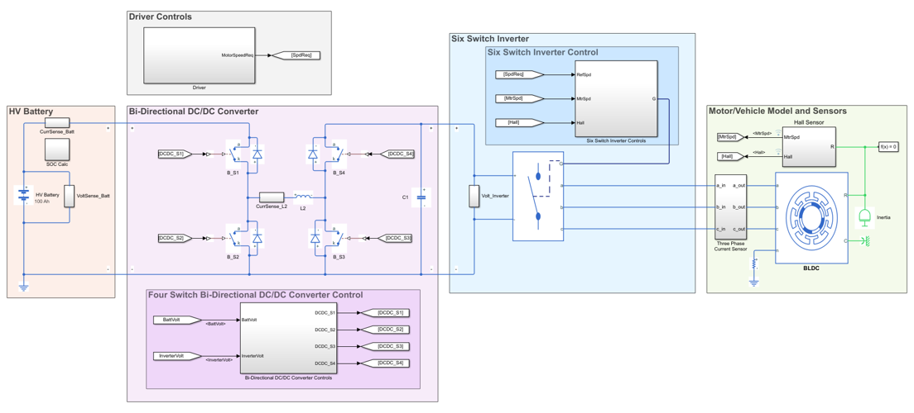
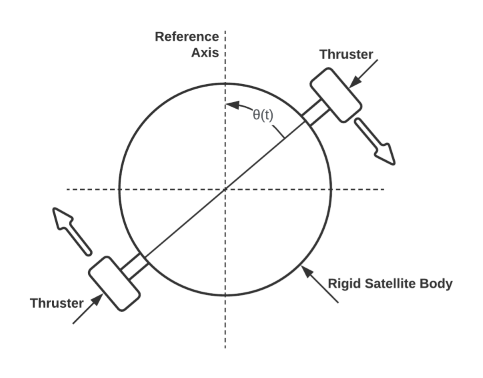

Welcome to my personal webpage. I am a software and controls engineer working in the automotive industry. I have a passion for learning, creating, and houseplants.
My skillset is with automotive software development. I am expanding my capabilities into data science and machine learning. For examples of work that I've done, and a showcase of my skills, check out the projects tab.
Skills Snapshot
MATLAB Simulink C++ Python
agile development version control
communication collaboration
problem-solving creativity
"A person who never made a mistake never tried anything new."
-Albert Einstein
Bank Churn Classification

Winter 2024 Personal Project
Python Jupyter Notebooks
The best way to learn data science and machine learning is by jumping in and completing actual projects. To faciliate this, I entered into the latest Kaggle playground series competition.
The S4E1 playground series project asks competitors to build a model that can predict banking customer churn given a variety of input characteristics. Our goal is to analyze a training dataset, highlight any correlations, then determine the optimal modeling method for predicting if a customer will leave the bank. Once a model is built, it can be applied to a test dataset to generate the probability of any given customer leaving the bank.
With this project, I focused on developing my understanding of data science techniques and methodology. Any programming was completed using Jupyter Notebooks and Python.
Read the Bank Churn Classification report here.
Python Jupyter Notebooks
The best way to learn data science and machine learning is by jumping in and completing actual projects. To faciliate this, I entered into the latest Kaggle playground series competition.
The S4E1 playground series project asks competitors to build a model that can predict banking customer churn given a variety of input characteristics. Our goal is to analyze a training dataset, highlight any correlations, then determine the optimal modeling method for predicting if a customer will leave the bank. Once a model is built, it can be applied to a test dataset to generate the probability of any given customer leaving the bank.
With this project, I focused on developing my understanding of data science techniques and methodology. Any programming was completed using Jupyter Notebooks and Python.
Read the Bank Churn Classification report here.
Regenerative Braking Control Method

Fall 2021 Term Project
MATLAB/Simulink
Brushless DC motors are commonly found in automotive applications. These motors require a controlled three-phase current to operate. This control is generally implemented by use of a six-switch inverter. Depending on how you control each of the switches in an inverter, you can generate braking torque and recover energy (regenerative braking). This feature is necessary for hybrid electric vehicles to optimize energy consumption.
In this term project, I focused on analysing a six-switch inverter control strategy that could be used for regenerative braking. To accomplish this, a simplified vehicle energy model was built in MATLAB Simulink with Simscape electrical components.
Read the Regenerative Braking report here.
MATLAB/Simulink
Brushless DC motors are commonly found in automotive applications. These motors require a controlled three-phase current to operate. This control is generally implemented by use of a six-switch inverter. Depending on how you control each of the switches in an inverter, you can generate braking torque and recover energy (regenerative braking). This feature is necessary for hybrid electric vehicles to optimize energy consumption.
In this term project, I focused on analysing a six-switch inverter control strategy that could be used for regenerative braking. To accomplish this, a simplified vehicle energy model was built in MATLAB Simulink with Simscape electrical components.
Read the Regenerative Braking report here.
Satellite Attitude Control System

Fall 2020 Term Project
MATLAB/Simulink Control Theory
This group project discusses the design of a satellite attitude control system. Attitude control is the method with which a satellite maintains orientation in space. This is accomplished using various kinds of actuators that can provide physical or inertial thrust. The report covers a variety of areas tied to control system analysis; including noise rejection, stability, open vs closed loop response, and Proportional-Integral-Derivative (PID) control.
A simplified system model was used to simulate our rigid satellite body. Once implemented in MATLAB/Simulink, it was possible to complete an array of analysis covering topics tied to advanced control theory.
Read the Satellite Attitude Control report here.
MATLAB/Simulink Control Theory
This group project discusses the design of a satellite attitude control system. Attitude control is the method with which a satellite maintains orientation in space. This is accomplished using various kinds of actuators that can provide physical or inertial thrust. The report covers a variety of areas tied to control system analysis; including noise rejection, stability, open vs closed loop response, and Proportional-Integral-Derivative (PID) control.
A simplified system model was used to simulate our rigid satellite body. Once implemented in MATLAB/Simulink, it was possible to complete an array of analysis covering topics tied to advanced control theory.
Read the Satellite Attitude Control report here.
Enjoy a little choose-your-own-adventure game built into my site. Just for fun!